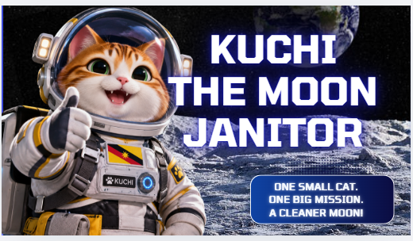

REAL NASA HISTORY / THE MOON
Apollo 11
Lunar Laser Ranging Retroreflector
Apollo 11 was the first mission to land humans on the Moon. The astronauts deployed a Lunar Laser Ranging Retroreflector on the lunar surface. Scientists on Earth can direct laser pulses toward the reflector and measure the returning light to study the Earth-Moon distance with high precision.
Mission focusHuman lunar exploration and precision distance measurement.
Key instrumentLunar Laser Ranging Retroreflector (LLRR).
How it worksReflects laser pulses sent from Earth back toward their source.
Scientific legacySupports precise measurements of the Earth-Moon distance and studies of the Earth-Moon system.
PHOTO GALLERY SLOT
VIDEO DOCUMENTARY SLOT
RESEARCH / PDF SLOT
REAL NASA HISTORY. Add your selected archival photographs, video links and references in this mission panel.